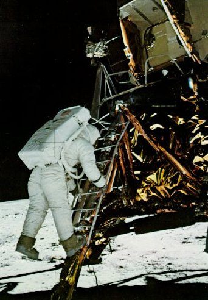

|

|
Leaving the ninth step of the ladder,
Aldrin jumps down to the
Moon. Earlier on the "porch" he
had radioed, "Now I want to partially
close the hatch, making sure
not to lock it on my way out."
Armstrong's dry response was: "A
good thought." On Earth his
weight, including the spacesuit
and mechanism-filled portable life-support
system, would have totaled 360 lb;
but here the gross
came only to a bouncy 60 lb. The
descent-engine exhaust bell (extreme right)
came to rest about a
foot above the surface.
|